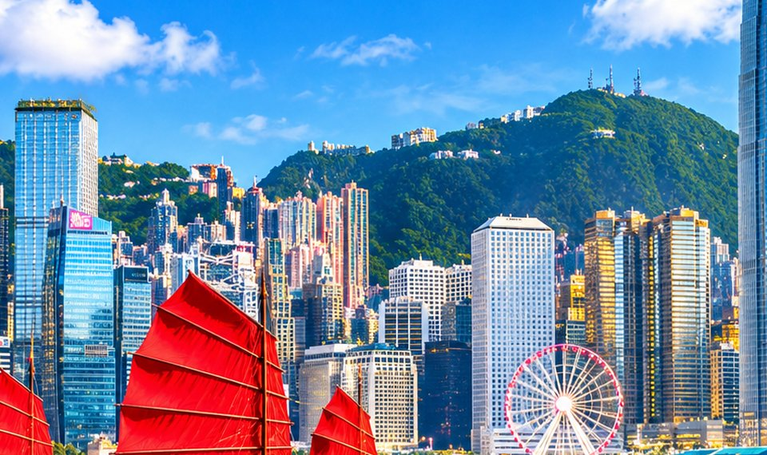

الأقاليم الجديدة New Territories · 新界
شا تين وجزيرة لانتاو، الحدائق والطبيعة والمعالم
80 موقعًا في الدليل4 مناطق فرعية
🔎 البحث في جميع الأحياء والتصنيفات
تم توسيع الدليل ليشمل أحياء إضافية؛ بعض بيانات الأماكن تحتاج تأكيد التشغيل قبل الزيارة. عروض الإضاءة موسمية وتتغير مواعيدها؛ راجع الرابط الرسمي.